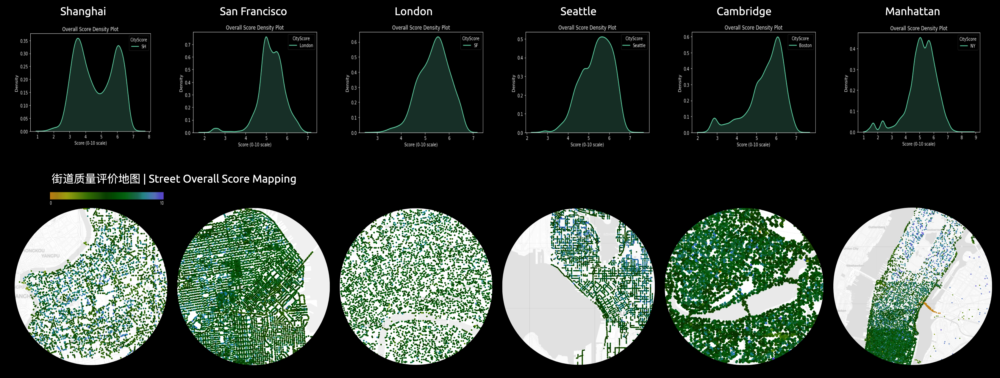

METHOD
1 | the development of the Street Space Assessment System
Reid Ewing and Otto Clement describes operational definitions and measurement protocols of five intangible qualities of urban design in the book Measure Urban Form in 2013. These qualities include: imageability, visual enclosure, human scale, transparency, and complexity.They are measured through 35 features segmented from Street View Image, such as buildings, streetlight, sidewalk, plants,etc.
2 | Database Build-up with 100K+ Street View Images across Pudong District
3 | Sampling for Training Models
3.1 Randomly sample 5000 images across Shanghai region as the training data
3.2 Download street view images with consistent angles and requirements
4 | Training Data Through Public Participation
Visitors can directly click on the photo they prefer.
To acquire training data of people’s preferences on street view images, we developed an online questionnaire platform on which the visitors can select the images they directly. These preferences are then translated to scores with Microsoft TrueSkill Algorithm.
5 | Sample Evaluation (Training Data Summary)
According to the actural sample questionaire, photo's preferences are translated into scores through Microsoft Trueskill algorithm.
The scores are normalized and rescaled in order for easier comparision.
6 | Model Training: Computer Vision Segmentation

Model Training: Machine Learning with Classification and Regression Algorithms
Model Training Results
The result of four dimensions under normalization with the target range of [0,10] all show a normal distribution, indicating much room for improvement in urban style.
7 | Global City Benchmark
Overall Score Evaluation across 5 other Global Innovative Cities with Shanghai

Kernel Density Estimation/Street Overall Score Mapping